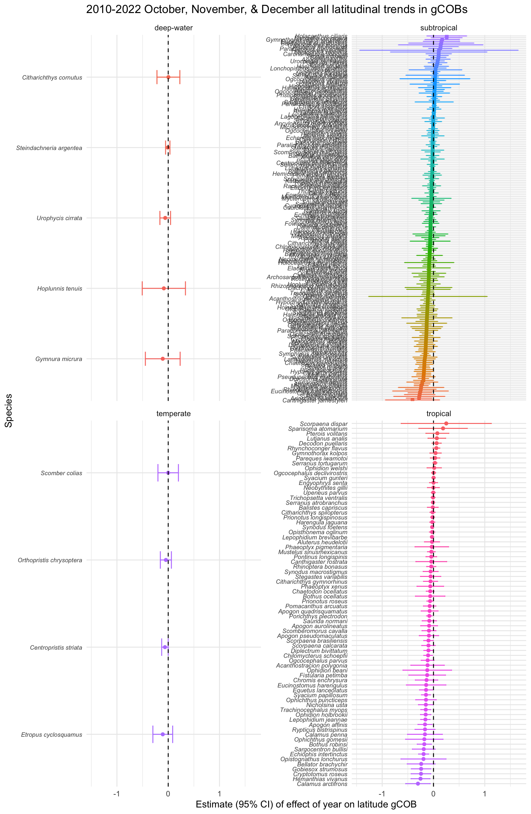
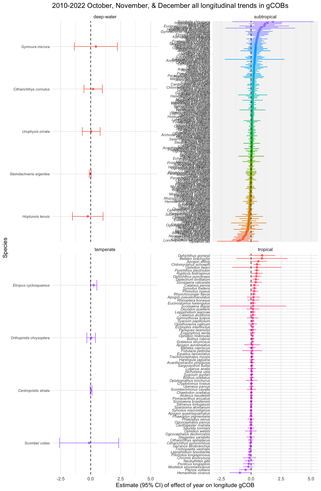
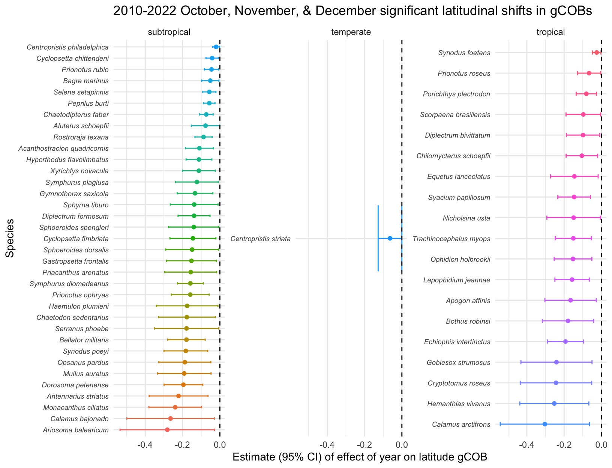
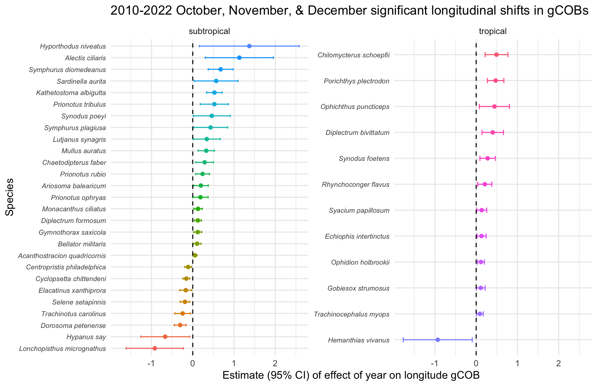

7_allGoM_fall
Tropicalization of Gulf of Mexico Fish Communities
Analysis of SEAMAP Trawl Data
Data Subset: all of GoM stations for fall trawls (October, November, December)
Number of trawl stations sampled each year
Table 1. Number of trawl stations for each year of data and the fall months during which sampling took place.
| YR | num_trawls | dates |
|---|---|---|
| 2010 | 375 | 11; 10 |
| 2011 | 298 | 11; 10 |
| 2012 | 276 | 10; 11 |
| 2013 | 271 | 11; 10; 12 |
| 2014 | 404 | 10; 11 |
| 2015 | 339 | 10; 11 |
| 2016 | 196 | 10; 11 |
| 2017 | 290 | 11; 10 |
| 2018 | 283 | 10; 11 |
| 2019 | 285 | 10; 11 |
| 2020 | 243 | 12; 10; 11 |
| 2021 | 264 | 10; 11 |
| 2022 | 205 | 10; 11 |
Map of trawl stations
Figure 1. Trawl sampling locations for each year of data collection for this subset of data (2010-2022 fall sampling in months of October, November, and December).
There are 500 fish species that were caught in trawls in this subset of data.
Of those 500 fish species, only 288 of them had gCOB values for at least 5 years. For these fish species, linear models were constructed to test if their latitude and longitude gCOBs had shifted over time.
Table 2. The number of fish species that have significantly shifted latitudinally or longitudinally based upon their gCOBs.
| climate_zone | n | significant latitude shift | North shifted | South shifted | significant longitude shift | West shifted | East shifted |
|---|---|---|---|---|---|---|---|
| deep-water | 5 | 0 | 0 | 0 | 0 | 0 | 0 |
| subtropical | 205 | 35 | 0 | 35 | 27 | 8 | 19 |
| temperate | 4 | 1 | 0 | 1 | 0 | 0 | 0 |
| tropical | 74 | 19 | 0 | 19 | 12 | 1 | 11 |
Warning: There were 2 warnings in `mutate()`.
The first warning was:
ℹ In argument: `across(all_of(tropical_directions), str_to_sentence)`.
Caused by warning in `stri_trans_totitle()`:
! argument is not an atomic vector; coercing
ℹ Run `dplyr::last_dplyr_warnings()` to see the 1 remaining warning.Warning: There were 2 warnings in `mutate()`.
The first warning was:
ℹ In argument: `across(all_of(subtropical_directions), str_to_sentence)`.
Caused by warning in `stri_trans_totitle()`:
! argument is not an atomic vector; coercing
ℹ Run `dplyr::last_dplyr_warnings()` to see the 1 remaining warning.Warning: There were 2 warnings in `mutate()`.
The first warning was:
ℹ In argument: `across(all_of(temperate_directions), str_to_sentence)`.
Caused by warning in `stri_trans_totitle()`:
! argument is not an atomic vector; coercing
ℹ Run `dplyr::last_dplyr_warnings()` to see the 1 remaining warning.Table XX. The tropical fish species that have significantly shifted their geographical center of biomass (gCOB) over time.
| south | west | east |
|---|---|---|
| Apogon affinis | Hemanthias vivanus | Chilomycterus schoepfii |
| Bothus robinsi | Null | Diplectrum bivittatum |
| Calamus arctifrons | Null | Echiophis intertinctus |
| Chilomycterus schoepfii | Null | Gobiesox strumosus |
| Cryptotomus roseus | Null | Ophichthus puncticeps |
| Diplectrum bivittatum | Null | Ophidion holbrookii |
| Echiophis intertinctus | Null | Porichthys plectrodon |
| Equetus lanceolatus | Null | Rhynchoconger flavus |
| Gobiesox strumosus | Null | Syacium papillosum |
| Hemanthias vivanus | Null | Synodus foetens |
| Lepophidium jeannae | Null | Trachinocephalus myops |
| Nicholsina usta | Null | Null |
| Ophidion holbrookii | Null | Null |
| Porichthys plectrodon | Null | Null |
| Prionotus roseus | Null | Null |
| Scorpaena brasiliensis | Null | Null |
| Syacium papillosum | Null | Null |
| Synodus foetens | Null | Null |
| Trachinocephalus myops | Null | Null |
Table XX. The subtropical fish species that have significantly shifted their geographical center of biomass (gCOB) over time.
| south | west | east |
|---|---|---|
| Acanthostracion quadricornis | Centropristis philadelphica | Acanthostracion quadricornis |
| Aluterus schoepfii | Cyclopsetta chittendeni | Alectis ciliaris |
| Antennarius striatus | Dorosoma petenense | Ariosoma balearicum |
| Ariosoma balearicum | Elacatinus xanthiprora | Bellator militaris |
| Bagre marinus | Hypanus say | Chaetodipterus faber |
| Bellator militaris | Lonchopisthus micrognathus | Diplectrum formosum |
| Calamus bajonado | Selene setapinnis | Gymnothorax saxicola |
| Centropristis philadelphica | Trachinotus carolinus | Hyporthodus niveatus |
| Chaetodipterus faber | Null | Kathetostoma albigutta |
| Chaetodon sedentarius | Null | Lutjanus synagris |
| Cyclopsetta chittendeni | Null | Monacanthus ciliatus |
| Cyclopsetta fimbriata | Null | Mullus auratus |
| Diplectrum formosum | Null | Prionotus ophryas |
| Dorosoma petenense | Null | Prionotus rubio |
| Gastropsetta frontalis | Null | Prionotus tribulus |
| Gymnothorax saxicola | Null | Sardinella aurita |
| Haemulon plumierii | Null | Symphurus diomedeanus |
| Hyporthodus flavolimbatus | Null | Symphurus plagiusa |
| Monacanthus ciliatus | Null | Synodus poeyi |
| Mullus auratus | Null | Null |
| Opsanus pardus | Null | Null |
| Peprilus burti | Null | Null |
| Priacanthus arenatus | Null | Null |
| Prionotus ophryas | Null | Null |
| Prionotus rubio | Null | Null |
| Rostroraja texana | Null | Null |
| Selene setapinnis | Null | Null |
| Serranus phoebe | Null | Null |
| Sphoeroides dorsalis | Null | Null |
| Sphoeroides spengleri | Null | Null |
| Sphyrna tiburo | Null | Null |
| Symphurus diomedeanus | Null | Null |
| Symphurus plagiusa | Null | Null |
| Synodus poeyi | Null | Null |
| Xyrichtys novacula | Null | Null |
Table XX. The temperate fish species that have significantly shifted their geographical center of biomass (gCOB) over time.
| south | west | east |
|---|---|---|
| Centropristis striata | Null | Null |

Figure 2. Latitudinal trends in gCOBs for fish species (deep-water, subtropical, temperate, tropical).

Figure 3.Longitudinal trends in gCOBs for fish species (deep-water, subtropical, temperate, tropical).

Figure 4.Latitudinal trends in gCOBs for fish species (deep-water, subtropical, temperate, tropical) with a significant shift over time.

Figure 5.Longitudinal trends in gCOBs for fish species (deep-water, subtropical, temperate, tropical) with a significant shift over time.